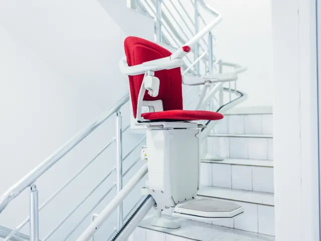

Partnerbijdrage
Duurzaam oud worden in de oudste stad van Nederland
Gepubliceerd op 13 december 2025

Nijmegen draagt de titel European Green Capital niet voor niets. Van de groene oevers van de Waal tot de duurzame initiatieven in de wijken: bewoners van deze stad denken na over hun impact op de wereld om hen heen. Die bewuste houding stopt niet bij afval scheiden of de fiets pakken. Steeds meer Nijmegenaren passen diezelfde denkwijze toe op hun eigen woning. Want waarom zou je nieuw kopen als tweedehands net zo goed werkt?
Slim omgaan met hulpmiddelen
Wanneer traplopen lastiger wordt, hoeft u niet meteen aan een ingrijpende verbouwing te denken. Een traplift zorgt ervoor dat u alle verdiepingen van uw woning kunt blijven gebruiken. Van de slaapkamer boven tot de woonkamer beneden, alles blijft bereikbaar. Maar een traplift hoeft niet nieuw te zijn om goed te functioneren.
Een tweedehands traplift is een slimme keuze voor wie bewust omgaat met geld én met grondstoffen. Deze liften zijn volledig gereviseerd en voldoen aan dezelfde veiligheidseisen als nieuwe exemplaren. U krijgt dezelfde betrouwbaarheid, dezelfde garantie en dezelfde service, maar betaalt een stuk minder. En u geeft een product een tweede leven in plaats van te kiezen voor nieuwproductie.
Kwaliteit die blijft
Bij Otolift worden tweedehands trapliften grondig gecontroleerd en waar nodig voorzien van nieuwe onderdelen. De rails worden op maat gemaakt voor uw specifieke trap, of deze nu recht is, een bocht heeft of een bijzondere vorm. Na de revisie is de traplift technisch in topconditie. U merkt geen verschil in gebruik, alleen in de prijs.
Alle veiligheidsvoorzieningen zijn aanwezig: een gordel voor extra zekerheid, sensoren die obstakels detecteren en een accu die blijft werken wanneer de stroom uitvalt. De bediening is eenvoudig en de installatie duurt doorgaans niet langer dan een dag.
Langer thuis in uw vertrouwde buurt
Nijmegen kent heel verschillende wijken, elk met een eigen karakter. Of u nu woont in de historische benedenstad, in het groene Nijmegen-Oost of in een van de nieuwere buurten: uw woning is meer dan vier muren. Het is de plek waar u uw buren kent, waar u weet welke route u naar de markt neemt en waar u zich thuis voelt.
Verhuizen naar een gelijkvloerse woning betekent vaak afscheid nemen van die vertrouwde omgeving. Door uw huidige woning aan te passen, blijft u wonen waar u wilt. Een traplift is daarbij vaak het verschil tussen gedwongen vertrekken en gewoon blijven.

Kleine stappen, groot verschil
Naast een traplift zijn er meer aanpassingen die het wonen comfortabeler maken. Handgrepen in de badkamer geven extra houvast, verlichting met bewegingssensoren voorkomt dat u in het donker naar een schakelaar zoekt en een verhoogd toilet maakt opstaan makkelijker. Dit soort hulpmiddelen zijn soms te regelen via de gemeente of deels te vergoeden.
Het mooie aan deze aanpassingen is dat ze vaak eenvoudig zijn aan te brengen. U hoeft uw woning niet op de kop te zetten om er langer prettig te kunnen wonen. Soms is het een kwestie van slim kiezen en op tijd handelen.
Een bewuste keuze
Kiezen voor tweedehands is geen compromis. Het is een bewuste afweging tussen kwaliteit, kosten en duurzaamheid. In een stad die vooroploopt in groen denken, past die keuze uitstekend. U investeert in uw eigen comfort, blijft wonen in uw vertrouwde omgeving en draagt bij aan een circulaire economie. Dat is oud worden op de Nijmeegse manier: met beide benen op de grond en oog voor de wereld om u heen.
Terug naar de beginpagina